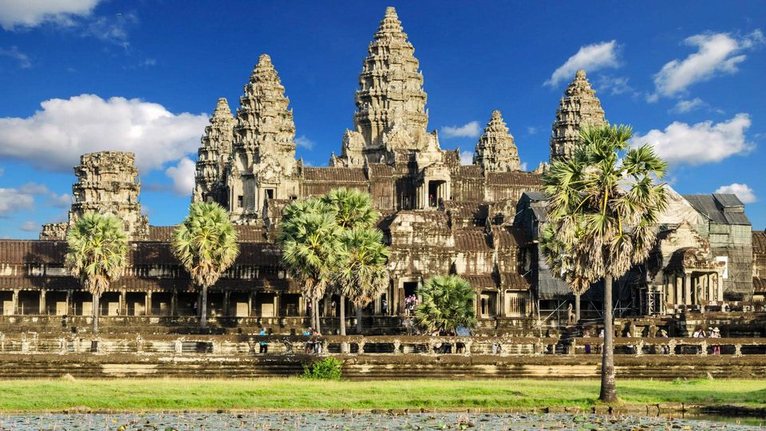

 Cambodia has a land area of 181,035 square kilometers in the southwestern part of the Indochina peninsula, about 20 percent of which is used for agriculture. It lies completely within the tropics with its southern most points slightly more than 10° above the Equator. The country capital city is Phnom Penh. International borders are shared with Thailand and the Lao People’s Democratic Republic on the West and the North, and the Social Republic of Viet Nam on the East and the Southeast. The country is bounded on the Southeast by the Gulf of Thailand. In comparison with neighbors, Cambodia is a geographical contact country administratively composed of 20 provinces, three of which have relatively short maritime boundaries, 2 municipalities, 172 districts, and 1,547 communes. The country has a coastline of 435 km and extensive mangrove stands, some of which are relatively undisturbed. The dominant features of the Cambodian landscape are the large, almost generally located, Tonle Sap (Great Lake) and the Bassac River Systems and the Mekong River, which crosses the country from North to South. Surrounding the Central Plains which covered three quarters of the country’s area are the more densely forested and sparsely populated highlands, comprising: the Elephant Mountains and Cardamom Mountain of the southwest and western regions; the Dangrek Mountains of the North adjoining of the Korat Plateau of Thailand; and Rattanakiri Plateau and Chhlong highlands on the east merging with the Central Highlands of Viet Nam.
Back to Link